SFDR (Sustainable Finance Disclosure Regulation) er EUs omfattende regelverk for bærekraftige investeringer og finansiell rapportering. Denne forordningen, som trådte i kraft i mars 2021, har revolusjonert hvordan finansielle tjenesteytelere må rapportere og dokumentere sine bærekraftspraksiser. For norske selskaper og investorer er SFDR blitt en kritisk faktor i kapitalforvaltning og regnskapsrapportering.
Seksjon 1: SFDR - Grunnleggende Oversikt
1.1 Hva er SFDR?
Sustainable Finance Disclosure Regulation (SFDR) er en EU-forordning som krever transparens og standardisering av bærekraftsinformasjon i finanssektoren. Målet er å:
- Forebygge grønnvasking (greenwashing) i finansmarkedene
- Øke tillit til bærekraftige finansprodukter
- Standardisere rapportering av bærekraftsrisiko og -påvirkning
- Fremme kapitalallokering til bærekraftige investeringer
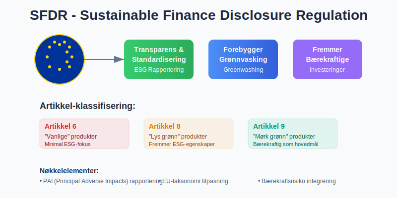
1.2 Hvem Påvirkes av SFDR?
SFDR gjelder for alle finansmarkedsdeltakere og finansielle rådgivere som opererer i EU eller tilbyr tjenester til EU-investorer:
| Aktørtype | SFDR-krav | Rapporteringsansvar |
|---|---|---|
| Forvaltningsselskaper | Produktklassifisering | Artikkel 6, 8, 9 rapportering |
| Pensjonsfond | Bærekraftsintegrasjon | Årlig rapportering |
| Forsikringsselskaper | Risikotransparens | PAI (Principal Adverse Impact) |
| Investeringsbanker | Due diligence | ESG-vurderinger |
| Asset managers | Porteføljerapportering | Periodisk offenliggjøring |
1.3 SFDR og Norske Selskaper
Selv om Norge ikke er EU-medlem, påvirkes norske aktører gjennom:
- EØS-avtalen og finansmarkedsintegrasjon
- Norske fond som markedsføres i EU
- Internasjonale investeringer og kapitalstrømmer
- Compliance-krav fra europeiske investorer
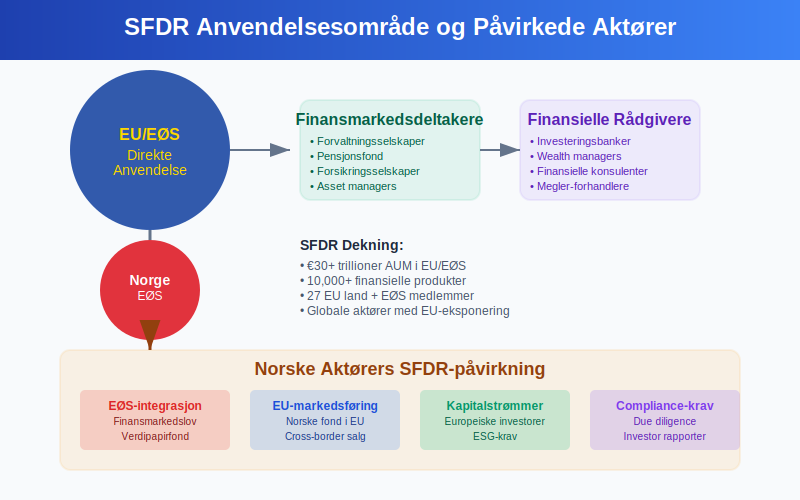
Seksjon 2: SFDR Artikkel-klassifisering
2.1 Artikkel 6 - “Vanlige” Produkter
Artikkel 6-produkter er finansielle produkter som:
- Ikke fremmer miljømessige eller sosiale egenskaper
- Ikke har bærekraftighetsintegrering som hovedmål
- Må likevel rapportere om PAI (Principal Adverse Impacts)
Kjennetegn:
- Tradisjonell avkastning-fokusert strategi
- Minimal ESG-integrering
- Laveste rapporteringskrav under SFDR
2.2 Artikkel 8 - “Lyse grønne” Produkter
Artikkel 8-produkter fremmer miljømessige eller sosiale egenskaper, men har ikke bærekraftige investeringer som primærmål.
Rapporteringskrav:
- Pre-contractual disclosures om ESG-karakteristika
- Periodisk rapportering om måloppnåelse
- Do No Significant Harm (DNSH) prinsipper
- God forvaltningsskikk-vurderinger
2.3 Artikkel 9 - “Mørke grønne” Produkter
Artikkel 9-produkter har bærekraftige investeringer som hovedmål og strengeste rapporteringskrav.
Karakteristika:
- Målbar positiv påvirkning på miljø eller samfunn
- Robust due diligence-prosess
- Kvantifiserbare bærekraftsindikatorer
- Høyeste nivå av transparens og ansvarlighet
| Artikkel | Bærekraftsfokus | Rapporteringsomfang | Markedsandel |
|---|---|---|---|
| Artikkel 6 | Minimal | Grunnleggende PAI | ~60% |
| Artikkel 8 | Moderat | Utvidet ESG | ~35% |
| Artikkel 9 | Høy | Omfattende bærekraft | ~5% |
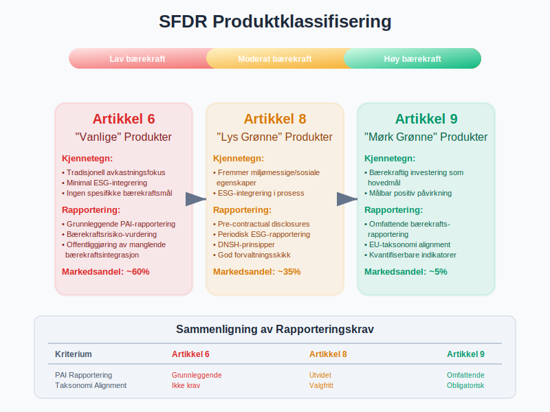
Seksjon 3: Principal Adverse Impacts (PAI)
3.1 Hva er PAI?
Principal Adverse Impacts er negative påvirkninger på bærekraftsfaktorer som følge av investeringsbeslutninger. SFDR krever at finansmarkedsdeltakere identifiserer, måler og rapporterer disse påvirkningene.
3.2 PAI-indikatorer for Miljø
Klimaendringer og andre miljørelaterte indikatorer:
| Indikator | Måleenhet | Rapporteringsfrekvens |
|---|---|---|
| GHG-utslipp Scope 1 | tCO2eq | Årlig |
| GHG-utslipp Scope 2 | tCO2eq | Årlig |
| GHG-utslipp Scope 3 | tCO2eq | Årlig |
| Carbon footprint | tCO2eq/M€ investert | Årlig |
| GHG-intensitet | tCO2eq/M€ omsetning | Årlig |
| Energiforbruk | MWh | Årlig |
| Biodiversitetspåvirkning | Prosent av investeringer | Årlig |
| Vannforbruk | Kubikkmeter | Årlig |
| Avfallsgenerering | Tonn farlig avfall | Årlig |
3.3 PAI-indikatorer for Sosiale og Ansatte-forhold
Sosiale og arbeidsrettsindikatorer:
- UNGC-prinsipper (UN Global Compact) brudd
- OECD-retningslinjer for multinasjonale selskaper
- Mangel på prosesser for UNGC og OECD-overholdelse
- Kjønnsgap i styrerepresentasjon
- Eksponering mot kontroversielle våpen
3.4 PAI-rapportering og Compliance
Store finansmarkedsdeltakere (>500 ansatte) må publisere PAI-uttalelser, mens mindre aktører kan velge å opt-in.
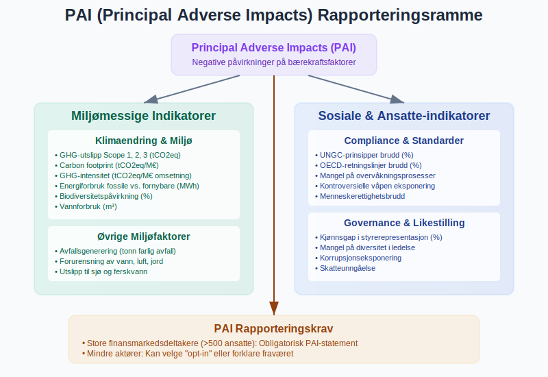
Seksjon 4: SFDR og Regnskapsintegrasjon
4.1 SFDR-påvirkning på Finansiell Rapportering
SFDR krever integrasjon med eksisterende regnskapsstandarder:
IFRS-tilpasning
- IFRS 7 Financial Instruments: Disclosures
- IFRS 9 Financial Instruments: ESG-faktorer i kredittap-modeller
- IFRS 13 Fair Value Measurement: ESG i verdsettelse
Norske Regnskapsstandarder (NGRS)
- God regnskapsskikk og bærekraftstransparens
- NRS 16 Finansielle instrumenter
- Årsregnskapslovens §3-3c om bærekraftsrapportering
4.2 SFDR Data i Balansen
Bærekraftsjusteringer kan påvirke:
| Balansepost | SFDR-påvirkning | Regnskapsbehandling |
|---|---|---|
| Finansielle eiendeler | ESG-verdsettelse | Fair value justering |
| Goodwill | Bærekraftsrisiko | Nedskrivningstesting |
| Avsetninger | Klimarisiko | Økte miljøforpliktelser |
| Immaterielle eiendeler | ESG-merker | Aktivering av bærekrafts-IP |
4.3 Resultatregnskap og SFDR
ESG-faktorer påvirker resultatlinjer:
- Grønne inntekter: Separat rapportering av bærekraftige inntekter
- Transisjonskostnader: Kostnader knyttet til ESG-transformasjon
- Klimarisikojusteringer: Nedskrivninger basert på klimascenarier
- ESG-relaterte gebyr: Rådgivning og compliance-kostnader
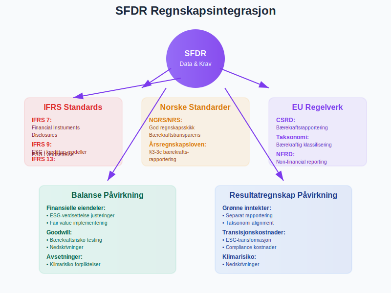
Seksjon 5: Taksonomi-forordningen og SFDR
5.1 EU-taksonomi som SFDR-fundament
EU-taksonomien definerer hva som kvalifiserer som miljømessig bærekraftige økonomiske aktiviteter. Den utgjør grunnlaget for SFDR Artikkel 9-klassifiseringer.
5.2 Taksonomiens Seks Miljømål
- Klimaendring tilpasning
- Klimaendring mitigering
- Bærekraftig bruk av vann og marine ressurser
- Overgang til sirkulær økonomi
- Forurensningsforebygging og kontroll
- Beskyttelse og restaurering av biodiversitet og økosystemer
5.3 Taksonomi-tilpasning (Alignment) Rapportering
Artikkel 9 fond må rapportere:
- Prosent taksonomi-tilpassede investeringer
- Technical screening criteria oppfyllelse
- DNSH (Do No Significant Harm) vurderinger
- Minimum social safeguards overholdelse
| Sektor | Taksonomi-andel | SFDR-relevans |
|---|---|---|
| Fornybar energi | 90-100% | Høy |
| Transport | 30-60% | Moderat |
| Bygg | 40-70% | Høy |
| Industri | 20-50% | Moderat |
| IKT | 10-30% | Lav |
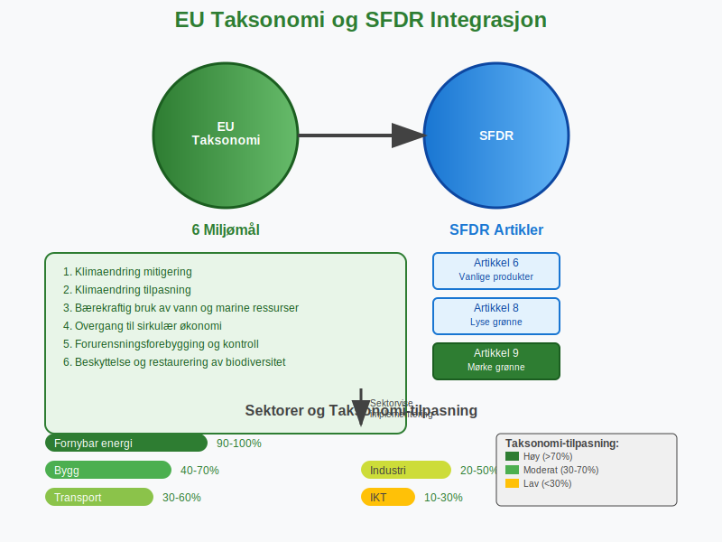
Seksjon 6: SFDR Compliance og Implementering
6.1 Organisatoriske Krav
Effektiv SFDR-implementering krever:
Governance-struktur
- ESG-komité på styrenivå
- Bærekraftsansvarlig (Chief Sustainability Officer)
- Data og teknologi-team for ESG-rapportering
- Internkontroll for bærekraftsdata
Prosesser og Retningslinjer
- ESG-integrasjon i investeringsprosessen
- Due diligence-prosedyrer for bærekraft
- Risikostyring for ESG-faktorer
- Rapporteringsrutiner og kvalitetssikring
6.2 Teknologi og Dataløsninger
SFDR-compliance krever robuste IT-systemer:
- ESG-databaser (MSCI, Sustainalytics, Bloomberg)
- Portfolio management-systemer med ESG-integrering
- Rapporteringsverktøy for SFDR-dokumentasjon
- Datavalidering og kvalitetskontroll
6.3 Kostnader og Investeringer
SFDR-implementering medfører betydelige kostnader:
| Kostnadskategori | Engangsbeløp | Årlige kostnader |
|---|---|---|
| IT-systemer | €50,000-200,000 | €20,000-50,000 |
| ESG-data | €10,000-100,000 | €25,000-150,000 |
| Personell | €100,000-300,000 | €150,000-500,000 |
| Konsulenter | €25,000-100,000 | €10,000-50,000 |
| Total | €185,000-700,000 | €205,000-750,000 |
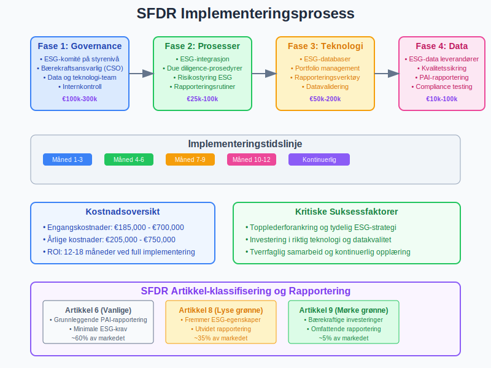
Seksjon 7: SFDR og Risikostyring
7.1 Bærekraftsrisiko i Risikostyring
SFDR krever at bærekraftsrisiko integreres i tradisjonelle risikostyringsprosesser:
Fysisk Klimarisiko
- Akutte risiker: Ekstremvær, naturkatastrofer
- Kroniske risiker: Havnivåstigning, temperaturendringer
- Påvirkning på eiendeler og verdikjeder
Overgangsrisiko
- Regulatorisk risiko: Nye lover og skatter (f.eks. karbonprising)
- Teknologirisiko: Utfasing av fossile løsninger
- Markedsrisiko: Endret forbrukerpreferanser
- Omdømmerisiko: ESG-kontroversier og boikott
7.2 ESG-risiko i Kredittvurdering
SFDR påvirker kredittrisiko gjennom:
- Miljørisiko påvirker tilbakebetalingsevne
- Sosial risiko (f.eks. arbeidskonflikter) påvirker drift
- Governance-risiko øker sannsynlighet for misligholdelse
7.3 Integrert Risiko- og Kapitalstyring
| Risikokomponent | SFDR-integrasjon | Kapitalallokering |
|---|---|---|
| Markedsrisiko | ESG-faktorer i prising | Overweight bærekraftige sektorer |
| Kredittrisiko | ESG-scoring i rating | Underweight høyrisiko-sektorer |
| Operasjonell risiko | ESG-prosess kvalitet | Investering i ESG-teknologi |
| Likviditetsrisiko | ESG-flow volatilitet | Grønne obligasjoner som buffer |
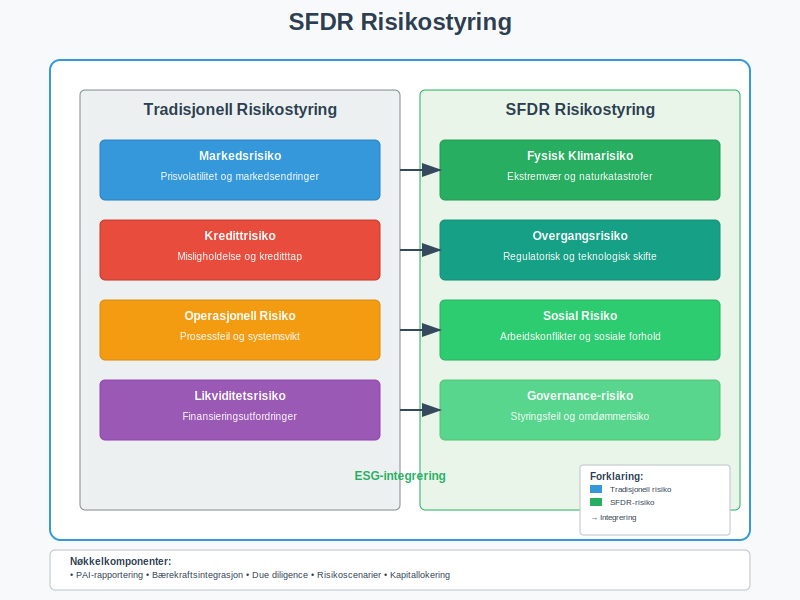
Seksjon 8: Markedspåvirkning og Trends
8.1 Kapitalstrømmer og SFDR-effekt
SFDR har drevet betydelige kapitalstrømmer:
- €300+ milliarder inn i Artikkel 8-produkter siden 2021
- €50+ milliarder inn i Artikkel 9-produkter
- “Brown to Green” reallokering på €100+ milliarder
- Priseffekter: ESG-premiums og “brown discounts”
8.2 Produktinnovasjon og Utvikling
SFDR har accelerert produktutvikling:
Nye Produktkategorier
- Impact bonds med målbare utfall
- Transition funds for klimaomstilling
- Nature-positive investeringer
- Social outcome produkter
Gebyr og Prising
- ESG-premiums: 10-20 basispunkter for Artikkel 8
- Impact-fee: 20-50 basispunkter for Artikkel 9
- Data-kostnader: Økte driftskostnader for ESG-rapportering
8.3 Konkurransedynamikk
| Aktørtype | SFDR-fordel | Utfordringer |
|---|---|---|
| Store forvaltere | Ressurser til compliance | Reputasjonsrisiko |
| Boutique ESG-forvaltere | Spesialistekspertise | Teknologi og skala |
| Tradisjonelle forvaltere | Eksisterende kundebase | ESG-transformasjon |
| Nye ESG-aktører | Ren ESG-profil | Kapital og tillit |
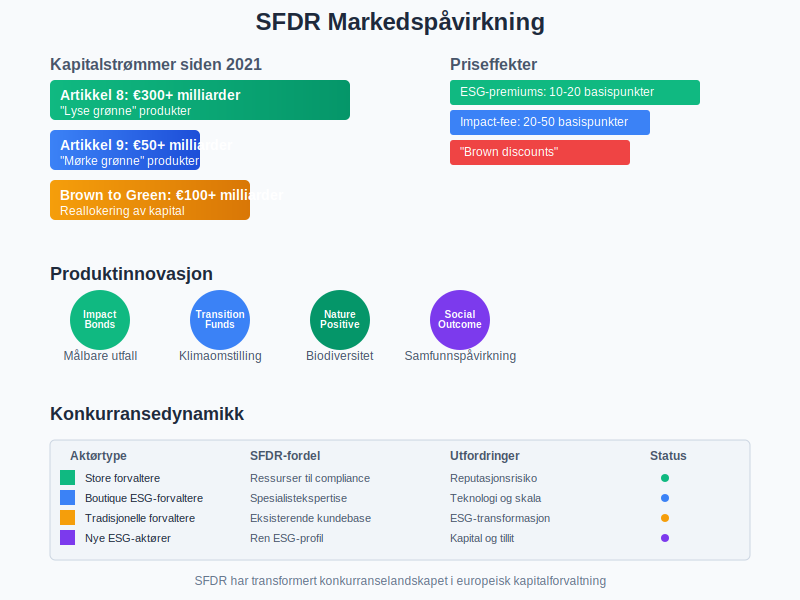
Seksjon 9: SFDR og Digitalisering
9.1 RegTech for SFDR-compliance
Regulatory Technology løsninger for SFDR:
Automatiserte Rapporteringsløsninger
- Template-generering for SFDR-dokumenter
- Data aggregering fra multiple kilder
- Kvalitetssikring og validering av ESG-data
- Versjonskontroll og audit trails
AI og Machine Learning
- ESG-scoring algoritmer
- Controversy detection i media overvåkning
- Predictive analytics for bærekraftsutfall
- Natural language processing for ESG-dokumenter
9.2 Blockchain og Transparens
Distributed ledger teknologi for SFDR:
- Sporbarhet av bærekraftsprestasjon
- Immutable records for ESG-data
- Smart contracts for impact-baserte betalinger
- Decentralisert verifisering av bærekraftsutfall
9.3 API-økosystem for ESG-data
Standardiserte API-er forbedrer SFDR-effektivitet:
| API-kategori | Funksjonalitet | Leverandører |
|---|---|---|
| ESG-data | Real-time scoring | MSCI, Bloomberg, Refinitiv |
| Carbon footprint | GHG-beregninger | Trucost, CDP |
| Taksonomi | EU-alignment scoring | ISS, Sustainalytics |
| Rapportering | Template og submission | SimCorp, FundRecs |
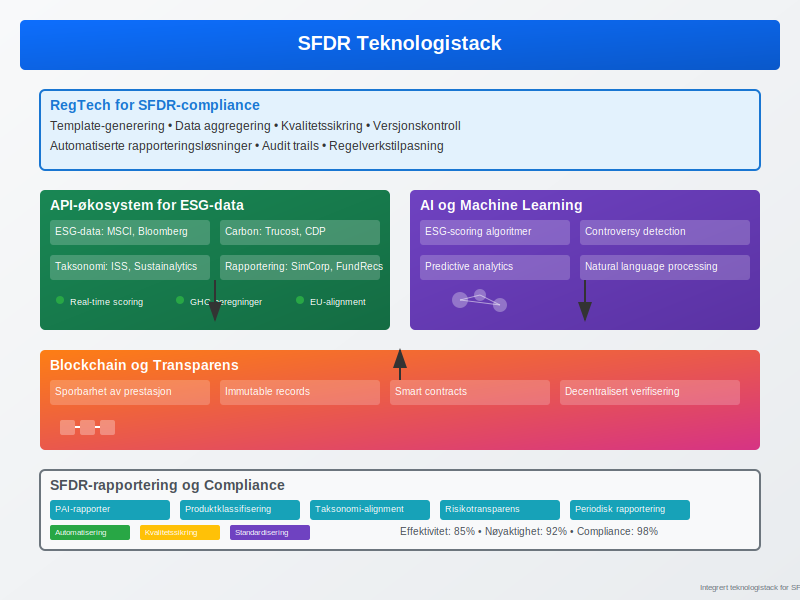
Seksjon 10: Fremtiden for SFDR
10.1 Regulatorisk Utvikling
SFDR evolusjon de neste 3-5 årene:
Level 2 Regulatory Technical Standards
- Detaljerte rapporteringsformater for PAI-indikatorer
- Standardiserte metodikker for impact-måling
- Kvantitative terskler for Artikkel 8 og 9-klassifisering
Utvidelser og Revisjoner
- Utvidede PAI-indikatorer inkludert sosiale faktorer
- Taksonomi-utvidelse til sosiale og governance-dimensjoner
- Globale standarder gjennom ISSB og TNFD
10.2 Markedsutvikling og Innovation
Fremtidige produkttrender:
- Personaliserte ESG-porteføljer basert på investorpreferanser
- Real asset ESG-produkter (infrastruktur, eiendom)
- Emerging markets ESG med utvidet datagrunnlag
- Crypto og DeFi ESG med nye måleramme
10.3 Integrering med Andre Initiativ
SFDR harmonisering med:
- TCFD (Task Force on Climate-related Financial Disclosures)
- TNFD (Taskforce on Nature-related Financial Disclosures)
- ISSB (International Sustainability Standards Board)
- CSRD (Corporate Sustainability Reporting Directive)
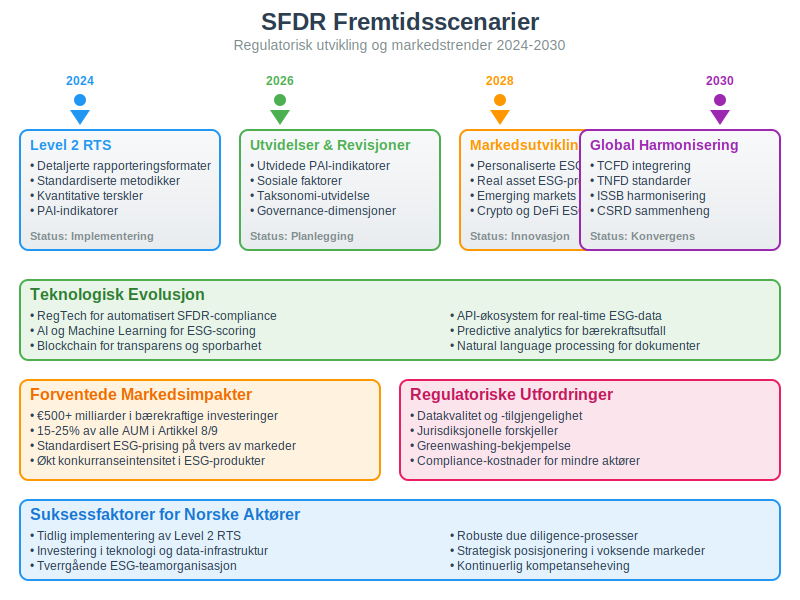
Konklusjon
SFDR (Sustainable Finance Disclosure Regulation) representerer et paradigmeskifte i finansiell rapportering og investeringsforvaltning. For norske selskaper og investorer er regelverket blitt en kritisk suksessfaktor i bærekraftig kapitalallokering og risikostyring.
Nøkkelinnsikter:
- Transparens og standardisering: SFDR har skapt felles språk for bærekraftsrapportering
- Markedstransformasjon: Betydelige kapitalstrømmer mot bærekraftige investeringer
- Operasjonell kompleksitet: Krav til nye systemer, prosesser og kompetanse
- Konkurransefordel: Tidlig implementering gir strategiske fordeler
Praktiske anbefalinger:
For finansmarkedsdeltakere:
- Start med Artikkel 6-compliance og bygg gradvis mot Artikkel 8/9
- Invester i teknologi og data-infrastruktur tidlig
- Etabler tverrgående ESG-teamorganisasjon
- Utvikle robuste due diligence-prosesser
For norske investorer:
- Forstå SFDR-klassifiseringen av produkter før investering
- Krev transparent rapportering av PAI og bærekraftsutfall
- Integrer ESG-faktorer i risikostyring
- Vurder EØS-implementering av SFDR-krav
Fremtidsperspektiv:
SFDR er kun begynnelsen på en omfattende transformasjon av finansmarkedene mot bærekraftighetsintegrering. Ved å forstå regelverkets implikasjoner og muligheter, kan norske aktører posisjonere seg strategisk i det voksende markedet for bærekraftige investeringer.
Regelverket vil fortsette å utvikle seg med økt granularitet, digitaliseringsleveransen og global harmonisering. Suksessful SFDR-implementering krever ikke bare compliance, men strategisk tenkning om hvordan bærekraft kan skape verdi og konkurransefortrinn i et raskt endrende finanslandskap.
SFDR er mer enn et regelverk - det er en katalysator for en mer bærekraftig og transparent finanssektor som vil definere fremtidens kapitalmarkeder.